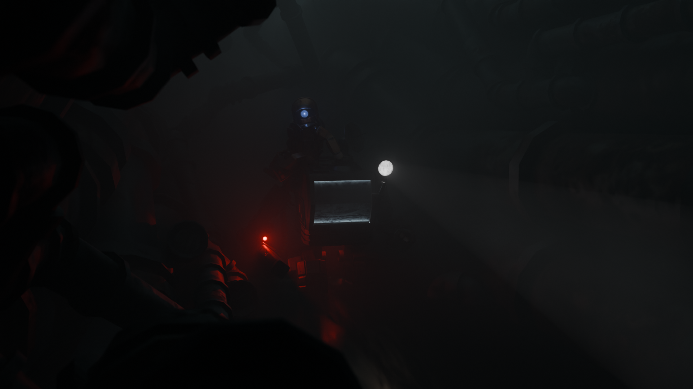
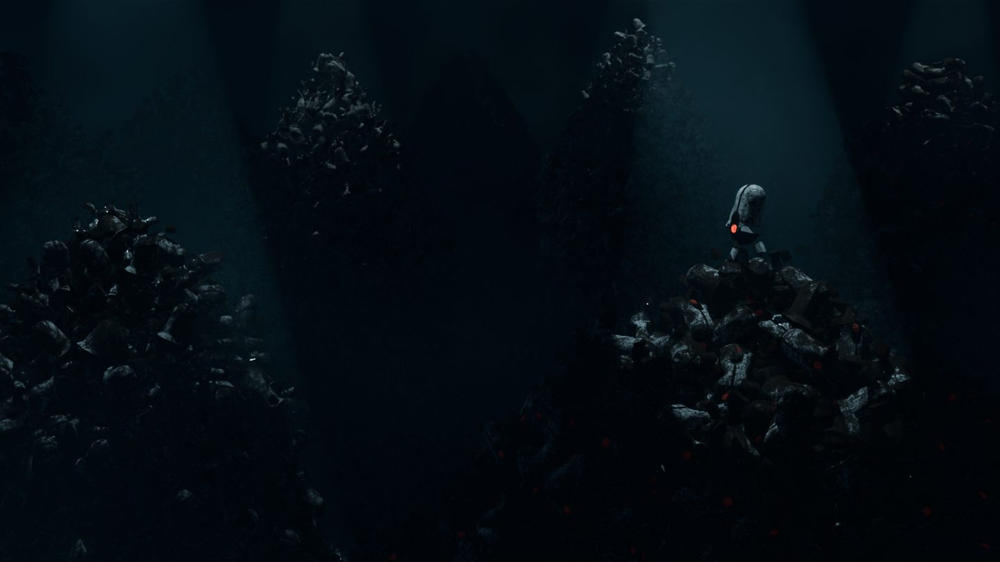
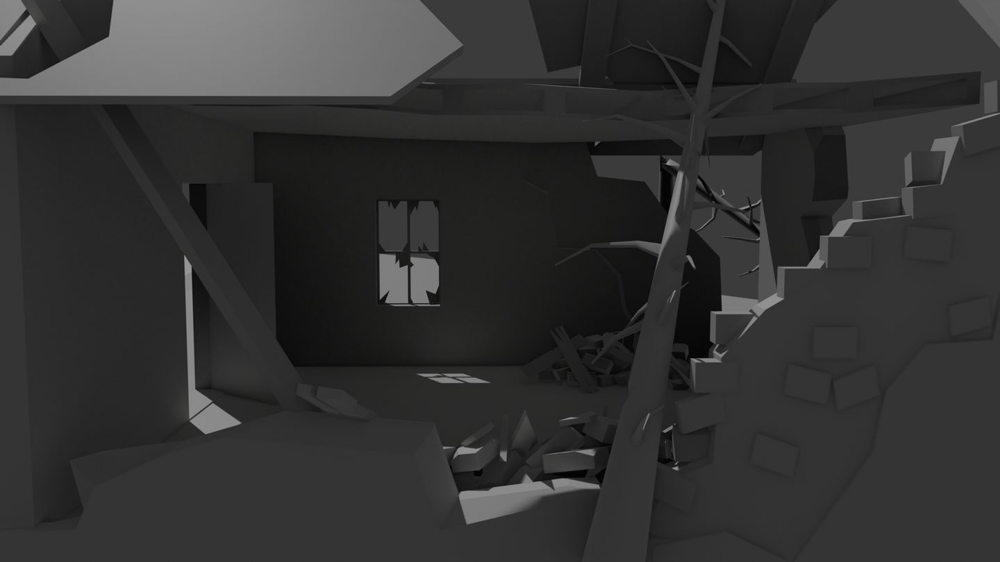
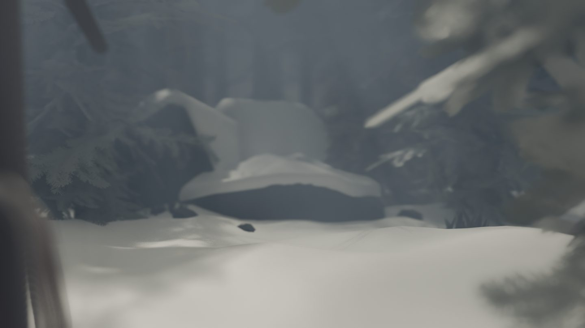
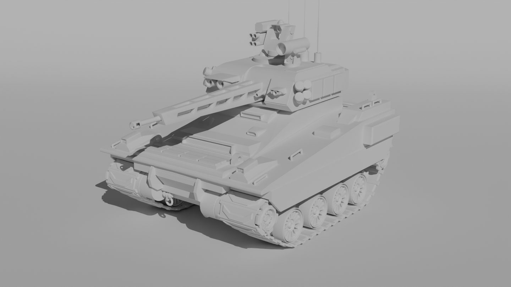

Environnements et ambiances
Scènes complètes : modélisation, éclairage, composition de scènes et effets de post-rendu.
Astronaute dans la prairie
Personnage seul dans l'herbe jaune et la neige, sous une brume épaisse.
Couloir des tuyaux vidéo, rendu VHS
Plan animé dans un réseau de tuyaux rouillés avec un personnage en combinaison assis sur un mecha.

Couloir des tuyaux statique
Plan statique avec un personnage en combinaison assis sur un mecha.

Le tas de robots
Collines de robots empilés dans une décharge dystopique. Scène inspirée de WALL-E.

Maison en ruine
Rendu sans textures d'une maison en ruine. Pour un projet de jeu narratif.

Sous-bois enneigé
Premier plan flou, neige modelée, sapins dans la brume. Pour un projet de jeu narratif.
Animation de personnages
Robot sur le tas de rebuts
Animation du réveil d'un robot au milieu de nombreux rebuts, scène inspirée de WALL-E.
Legbot
Petit robot orange bipède de course, présentation des différentes animations, pour un projet de jeu narratif.
Robot cassette
Robot dont la tête contient une cassette, présentation des différentes animations, pour un projet de jeu narratif.
Modélisation d'objets
Modèles en rendu sans textures

Véhicule militaire (RCV)
Recréation d'un véhicule à partir d'images de référence.
StG 44
Fusil d'assaut allemand StG 44 pour un projet de jeu narratif sur la Seconde Guerre mondiale.
PPSh-41
Pistolet-mitrailleur russe pour un projet de jeu narratif sur la Seconde Guerre mondiale.
Effets
Explosion
Effet d'explosion avec étincelles et effet de projectile enflammé.
Véhicule chenillé en mouvement
Modèle du véhicule militaire en mouvement avec tremblement de caméra et effets spéciaux.
Logiciels utilisés
Blender
Blender est un logiciel de modélisation 3D/2D, d'animation, de texturing, de compositing et d'édition vidéo gratuit et open source.
Quixel Mixer
Quixel Mixer est un logiciel de texturing gratuit qui permet une plus grande flexibilité que Blender.
À propos
Étudiant en L3 MIAGE, je me forme aux méthodes informatiques appliquées à la gestion des entreprises. À côté de mes études, je fais de la modélisation et de l'animation 3D par passion, avec Blender et Quixel Mixer.
Lien avec l'informatique
La 3D m'a appris la rigueur et la patience : découper un projet en étapes, gérer des fichiers volumineux et trouver les paramètres à modifier lorsque le rendu n'est pas satisfaisant. Ce hobby m'a aussi appris à apprendre de nouvelles technologies et à chercher des informations lorsque je ne connais pas un outil ou une méthode.